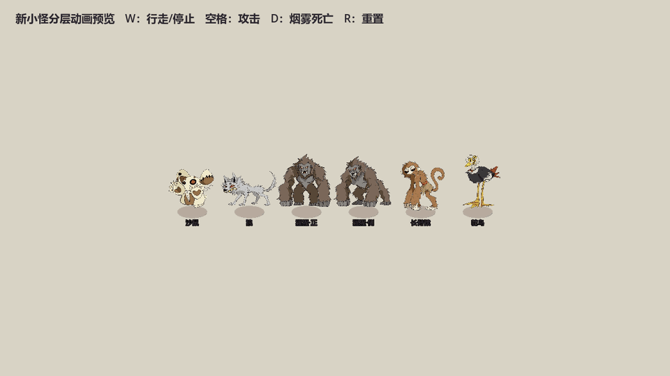

新小怪动画预览

顺序：行走 → 攻击 → 烟雾死亡。猩猩正面和侧面使用同一套怪物的两种朝向。
在 Godot 中打开 res://scenes/new_monsters_preview.tscn 并按 F6，可手动触发动画：W 切换行走，空格攻击，D 死亡，R 重置。

顺序：行走 → 攻击 → 烟雾死亡。猩猩正面和侧面使用同一套怪物的两种朝向。
在 Godot 中打开 res://scenes/new_monsters_preview.tscn 并按 F6，可手动触发动画：W 切换行走，空格攻击，D 死亡，R 重置。